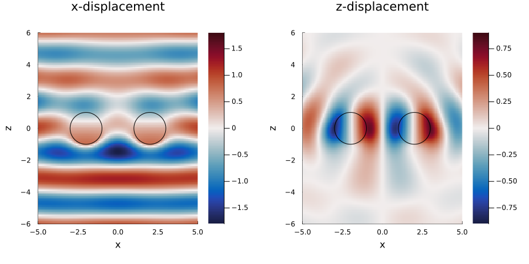

Scattering from spheres
ElasticWaves.jl extends the package MultipleScattering.jl to elastic waves in three spatial dimensions. This means that all the tools from MultipleScattering.jl, such as Particle, FrequencySimulation, run, and the plot recipes, can be used with an Elastic medium. See the documentation of MultipleScattering.jl for more on these tools.
Two spheres
First we define the background medium, and the medium of the particles:
using ElasticWaves, MultipleScattering, Plots
medium = Elastic(3; ρ = 1.0, cp = 1.0, cs = 0.6)
inclusion = Elastic(3; ρ = 3.0, cp = 2.0, cs = 1.2)Next we place two spheres, with radius 1, side by side:
particles = [
Particle(inclusion, Sphere([-2.0, 0.0, 0.0], 1.0)),
Particle(inclusion, Sphere([ 2.0, 0.0, 0.0], 1.0))
]The source is a plane shear wave which travels along the z-axis and is polarised along the x-axis, see plane_z_shear_source.
source = plane_z_shear_source(medium)
sim = FrequencySimulation(particles, source)To get results we run the simulation for an angular frequency ω and a region. A region in three dimensions leads to a grid of points on a plane with a constant y. Below this is the plane y = 0, which passes through the centres of both spheres.
ω = 1.2
region = Box([[-5.0, 0.0, -6.0], [5.0, 0.0, 6.0]])
result = run(sim, region, ω; res = 121)The field of the result is the displacement, with its three Cartesian components, at each point of the grid. This includes the points inside the spheres.
field(result)[1]3-element StaticArraysCore.SVector{3, ComplexF64} with indices SOneTo(3):
0.9039418039847841 + 0.4561169660892256im
4.532195368071943e-18 + 3.8731375606590934e-18im
-0.044515555273925936 + 0.014380080479284395imThe incident wave has only a displacement in the x direction. The displacement in the z direction is due only to the waves scattered from the spheres, which are both pressure and shear waves.
circles = [Circle(origin(p)[[1, 3]], outer_radius(p)) for p in particles]
p1 = plot(result, ω; seriestype = :heatmap,
field_apply = u -> real(u[1]), clims = (-1.8, 1.8)
)
plot!(p1, circles[1], linecolor = :black)
plot!(p1, circles[2], linecolor = :black)
plot!(p1, title = "x-displacement", yguide = "z")
p2 = plot(result, ω; seriestype = :heatmap,
field_apply = u -> real(u[3]), clims = (-0.9, 0.9)
)
plot!(p2, circles[1], linecolor = :black)
plot!(p2, circles[2], linecolor = :black)
plot!(p2, title = "z-displacement", yguide = "z")
plot(p1, p2, layout = (1, 2), size = (900, 450), margin = 4Plots.mm)
The vector spherical harmonics used for the displacement are not defined on the line which passes through the centre of a sphere and is parallel to the z-axis. Evaluating the field on one of these lines returns NaN. Above we chose res = 121 so that no point of the grid has x = -2 or x = 2.
The T-matrix
The scattering from each particle is described by its T-matrix, which relates the coefficients of the wave that excites the particle to the coefficients of the wave scattered from the particle. For an elastic sphere in an elastic medium use t_matrix:
basis_order = 5
T = t_matrix(particles[1], medium, ω, basis_order)
size(T)(108, 108)For each spherical harmonic there are three coefficients: one for the pressure potential and two for the shear (Debye) potentials. So the number of coefficients for one particle is
basisorder_to_basislength(typeof(medium), basis_order)108The functions that these coefficients multiply are given by regular_basis_function and outgoing_basis_function. The derivation of the T-matrix is in the notes ElasticSphereScattering.pdf.